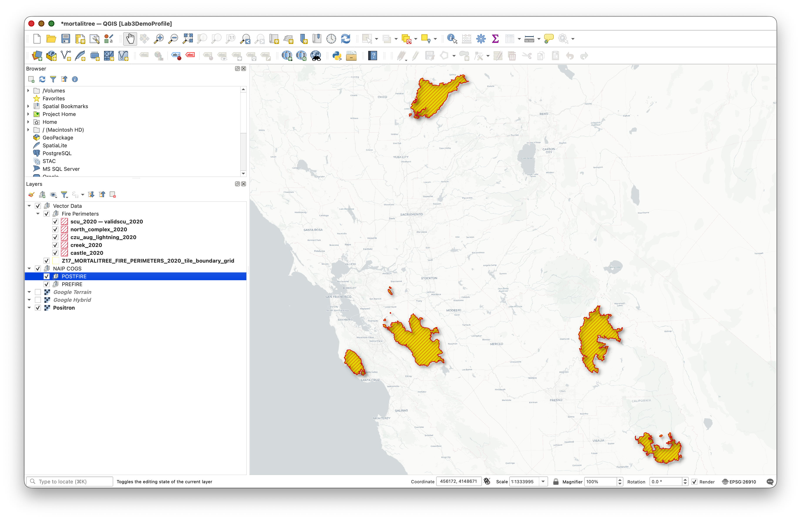
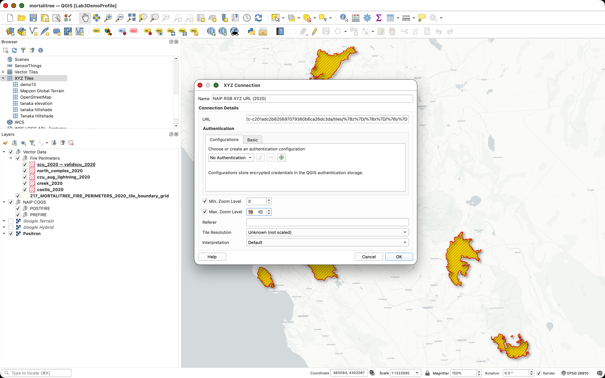
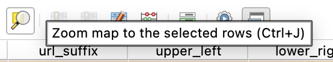
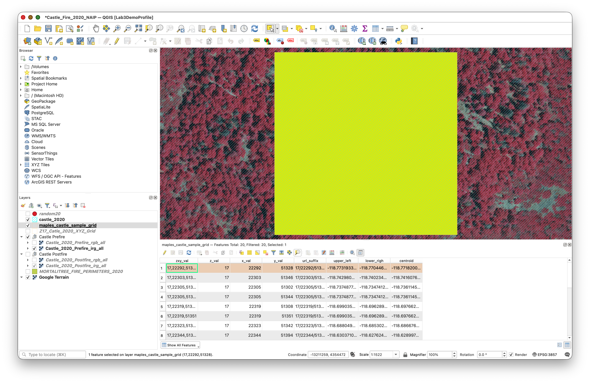
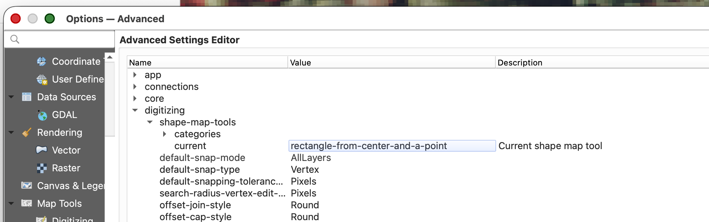

TURN IN BONUS LAB - Tree Labeling in QGIS
Required Week 07 turn-in and bonus opportunity: This lab is required for the Week 07 lab. Students will randomly select 20 candidate grid cells and complete tree labels in the first 4 suitable cells in both the postfire and prefire imagery. Students may then continue labeling additional suitable grid cells as bonus work. Each additional completed grid cell beyond the required 4, with both postfire and prefire labels, earns 1 extra credit point, up to 10 extra credit points for the quarter.
Note: To make sure you are viewing the most recent version of this lab guide, hold Shift and click the browser refresh button.
Turn-in for grading: Submit this lab on Canvas when you complete the required Week 07 labeling work. If you complete bonus grid cells, include them in the same submission.
Introduction
This lab introduces you to the QGIS interface through a hands-on tree crown annotation project. You'll learn essential QGIS skills while creating valuable training data by digitizing individual tree crowns from high-resolution aerial imagery.
What you'll be doing: You'll use Google Earth Engine to create temporary XYZ tile URLs for high-resolution NAIP (National Agriculture Imagery Program) imagery from before and after five major 2020 California fires. You will add those tile URLs to QGIS, organize them into prefire and postfire layer groups, randomly select 20 candidate grid cells, inspect them in the imagery, and label trees in both postfire and prefire imagery for the first 4 cells that contain forest cover without structures, roads, or other human-built infrastructure. After the required 4 cells, you may continue labeling additional suitable cells for extra credit.
Why this matters: The data you create will be used to train machine learning models for automated tree detection and counting. Accurate tree crown delineation is fundamental to forest inventory, wildfire risk assessment, and ecosystem monitoring. This workflow teaches you core GIS skills while contributing to real research applications.
Learning Objectives
By the end of this lab, you will be able to:
- Navigate the QGIS interface and use essential navigation tools
- Work with layers, including reordering, toggling visibility, and exploring metadata
- Use Google Earth Engine to create temporary XYZ tile URLs for NAIP imagery
- Add Earth Engine XYZ tile services to QGIS
- Query attribute tables and select features based on attributes and location
- Use geoprocessing tools to create a random sample of candidate grid cells
- Create and edit shapefile layers for new spatial labels
- Use a docked attribute table to move systematically through sampled grid cells
- Digitize rectangular tree labels from aerial imagery
- Export spatial data in GeoJSON format with proper naming conventions

Getting Started
Download and Extract the Project Package
Download the mortalitree.zip file from the course repository data folder:
This package contains the QGIS project structure and vector data you need for the labeling workflow. It does not include local NAIP imagery files or VRT imagery references. You will add the imagery yourself by creating Google Earth Engine XYZ tile URLs in the next section.

What's included in the .zip file:
- Pre-configured QGIS project file:
mortalitree.qgs - Vector data layers, including:
castle_2020(Castle Fire perimeter)creek_2020(Creek Fire perimeter)czu_aug_lightning_2020(CZU August Lightning Complex perimeter)north_complex_2020(North Complex perimeter)scu_2020(SCU Lightning Complex perimeter)Z17_MORTALITREE_FIRE_PERIMETERS_2020_tile_boundary_grid(XYZ tile grid)MORTALITREE_FIRE_PERIMETERS_2020
- Basemap layers, such as
Google HybridandGoogle Terrain - Prepared layer groups for organizing the imagery you will add:
PREFIRE - NAIP 2020 Earth Engine TilesPOSTFIRE - NAIP 2022 Earth Engine Tiles
- Pre-built folder structure following GIS best practices
- A ready-to-open QGIS project with the vector layers, basemaps, and imagery groups already organized
Extract the .zip file:
- Download
mortalitree.zip - Extract it to your Documents folder (or another location you can easily access)
Why is the imagery not already in the package? NAIP imagery is very large. Instead of downloading or packaging those files, you will ask Earth Engine to serve temporary map tiles to QGIS. This keeps the project package smaller and gives you practice connecting a cloud-based imagery service to desktop GIS.
Create NAIP Tile URLs in Google Earth Engine
Instead of downloading NAIP imagery or configuring QGIS to read cloud-hosted GeoTIFFs directly, you will use Google Earth Engine as a temporary tile server. Earth Engine will mosaic the California NAIP imagery for 2020 and 2022, create RGB and color-infrared visualizations, and print four XYZ tile URLs that QGIS can request as you pan and zoom.
Concept note: An XYZ tile URL is a web address pattern with
{z},{x}, and{y}placeholders. QGIS automatically replaces those placeholders with a zoom level, tile column, and tile row. This lets QGIS request only the small map images needed for your current view.Important limitation: Earth Engine tile URLs are temporary viewing links. If your QGIS layers stop drawing later, return to Earth Engine, run the script again, copy the new URLs, and update the QGIS XYZ connections.
Open the Google Earth Engine Code Editor:
- Create a new script.
- Copy and paste the full script below.
- Click Run.
Wait for the Console to print four URL lines:
NAIP RGB XYZ URL (2020)NAIP IRG XYZ URL (2020)NAIP RGB XYZ URL (2022)NAIP IRG XYZ URL (2022)
- Keep the Earth Engine tab open. You will copy these URLs into QGIS in the next section.
/*
EarthSys 144
NAIP RGB and IRG XYZ Tile URLs for QGIS
Objective:
This script creates temporary Earth Engine XYZ tile URLs for California
NAIP imagery from 2020 and 2022. You will copy the printed URLs into QGIS
so you can view prefire and postfire imagery while digitizing tree labels.
Datasets used:
1. TIGER/2018/States provides U.S. state boundaries. We use it to select
California and clip the imagery to the state boundary.
2. USDA/NAIP/DOQQ provides high-resolution aerial imagery from the National
Agriculture Imagery Program. NAIP usually includes red, green, blue, and
near-infrared bands.
Why two visualizations?
RGB shows imagery in natural color, similar to what your eyes would see.
IRG uses near-infrared, red, and green bands. Healthy vegetation often appears
bright in the near-infrared band, so this view can make trees easier to see.
*/
// --------------------------------------------------------------------
// STEP 1: Create a California boundary.
// --------------------------------------------------------------------
// Load a FeatureCollection of U.S. state boundaries.
// A FeatureCollection is a table of geographic features.
var states = ee.FeatureCollection('TIGER/2018/States');
// Filter the state table to the single feature whose NAME is California.
// The geometry() call extracts the polygon shape so we can use it for clipping.
var california = states.filter(
ee.Filter.eq('NAME', 'California')
).geometry();
// Center the Earth Engine map on California at a statewide zoom level.
Map.centerObject(california, 6);
// --------------------------------------------------------------------
// STEP 2: Define a helper function for each NAIP year.
// --------------------------------------------------------------------
function buildNaipLayer(year) {
// Create the first day of the requested year.
var start = ee.Date.fromYMD(year, 1, 1);
// Create the first day of the next year.
// Filtering from start to end gives all NAIP images from that calendar year.
var end = start.advance(1, 'year');
// Load NAIP images, keep only images that intersect California and the
// selected year, mosaic them into one display image, and clip to California.
var naip = ee.ImageCollection('USDA/NAIP/DOQQ')
.filterBounds(california)
.filterDate(start, end)
.mosaic()
.clip(california);
// RGB visualization uses red, green, and blue bands for natural color.
var rgbVis = {
bands: ['R', 'G', 'B'],
min: 0,
max: 255
};
// IRG visualization uses near-infrared, red, and green bands.
// This is often called color infrared, or CIR, imagery.
var irgVis = {
bands: ['N', 'R', 'G'],
min: 0,
max: 255
};
// Add preview layers to the Earth Engine map.
// The final false keeps them turned off until you choose to view them.
Map.addLayer(naip, rgbVis, 'NAIP RGB ' + year, true);
Map.addLayer(naip, irgVis, 'NAIP IRG ' + year, true);
// Convert each visualization into an Earth Engine map tile object.
// getMap() returns the URL pattern that QGIS needs for XYZ tiles.
var rgbMap = naip.visualize(rgbVis).getMap({});
var irgMap = naip.visualize(irgVis).getMap({});
// Print the tile URLs in the Console.
// Copy each urlFormat value exactly, including the {z}, {x}, and {y} parts.
print('================================================');
print('NAIP RGB XYZ URL (' + year + '):');
print(rgbMap.urlFormat);
print('NAIP IRG XYZ URL (' + year + '):');
print(irgMap.urlFormat);
}
// --------------------------------------------------------------------
// STEP 3: Build the prefire and postfire imagery layers.
// --------------------------------------------------------------------
// For this lab, 2020 is the prefire imagery year.
buildNaipLayer(2020);
// For this lab, 2022 is the postfire imagery year.
buildNaipLayer(2022);
Add the Earth Engine Tile URLs to QGIS
You will add four tile services to QGIS: 2020 RGB, 2020 IRG, 2022 RGB, and 2022 IRG. The 2020 layers are the prefire imagery, and the 2022 layers are the postfire imagery.
- Open QGIS.
- Go to Project > Open (or press
Ctrl+O/Cmd+O). - Navigate to your extracted
mortalitreefolder. - Select the QGIS project file
mortalitree.qgsand Open. - In the Browser panel, find XYZ Tiles.
- Right-click XYZ Tiles and choose New Connection...
- Add the first connection:
| Setting | Value |
|---|---|
| Name | NAIP 2020 RGB - Earth Engine |
| URL | Paste theNAIP RGB XYZ URL (2020) value from Earth Engine |

- Click OK.
- Repeat the same process for the other three URLs:
| QGIS connection name | Earth Engine Console URL |
|---|---|
NAIP 2020 IRG - Earth Engine |
NAIP IRG XYZ URL (2020) |
NAIP 2022 RGB - Earth Engine |
NAIP RGB XYZ URL (2022) |
NAIP 2022 IRG - Earth Engine |
NAIP IRG XYZ URL (2022) |
- Double-click each new XYZ connection to add it to your QGIS project.
Why use both RGB and IRG? RGB imagery is often easier to interpret because it looks familiar. IRG imagery can make vegetation stand out more clearly because healthy vegetation reflects strongly in near-infrared light. You can switch between them while deciding whether a grid cell contains trees.
Organize the NAIP Tile Layers in QGIS
Before you begin random selection and labeling, make sure the imagery is organized so you can quickly switch between years and band combinations. The project package should already include empty prefire and postfire imagery groups. If you do not see them, create them using the steps below.
Look in the Layers panel for these groups:
PREFIRE - NAIP 2020 Earth Engine TilesPOSTFIRE - NAIP 2022 Earth Engine Tiles- If either group is missing, right-click in an open area of the Layers panel and choose Add Group. If your QGIS version shows this option in a layer-panel menu instead, use that menu.
- Create the missing group or groups using the exact names shown above.
Drag these layers into the PREFIRE - NAIP 2020 Earth Engine Tiles group:
NAIP 2020 RGB - Earth EngineNAIP 2020 IRG - Earth Engine
Drag these layers into the POSTFIRE - NAIP 2022 Earth Engine Tiles group:
NAIP 2022 RGB - Earth EngineNAIP 2022 IRG - Earth Engine
- Keep the tile layers turned off until you zoom to a sampled grid cell.
- When inspecting a grid cell, turn on only one or two imagery layers at a time.
- Save the QGIS project so the tile connections and groups remain part of your lab workspace.
Performance note: Earth Engine is creating these map tiles for display. If you turn on all four statewide tile layers while zoomed far out, QGIS may feel slow. Zoom to the grid-cell level first, then turn on the imagery you need.
What's in the Data Folder
Inside the extracted mortalitree/data/ folder you'll find:
- Tile boundary grid:
Z17_MORTALITREE_FIRE_PERIMETERS_2020_tile_boundary_grid - Fire perimeter layers:
castle_2020,creek_2020,czu_aug_lightning_2020,north_complex_2020, andscu_2020 - Combined fire perimeter layer:
MORTALITREE_FIRE_PERIMETERS_2020 - Basemaps:
Google HybridandGoogle Terrain
Important: Never modify or delete the original files in the extracted data/ folder. These are your source data. Save your new working layers and final outputs in clearly named files so they are easy to find later.
Part 1: Confirm and Explore the Project
Step 1: Confirm the Project and Imagery Layers
You should now have the mortalitree.qgs project open and four Earth Engine NAIP tile layers added to it.
The project should show the tile boundary grid, the five fire perimeter layers, your prefire and postfire Earth Engine imagery groups, and the Google Hybrid and Google Terrain basemaps in the Layers Panel.
Try this:
- Use your mouse wheel to zoom in and out
- Use Zoom to Layer on the grid layer or one fire perimeter layer to see the project extent again
- Hold spacebar and drag to pan around the map
- Zoom to a fire area, turn on one NAIP tile layer, and notice how the imagery refreshes as you navigate and change scales
Step 2: Explore the Layers Panel
The Layers Panel (usually on the left side) shows all layers in your project. Let's explore how it works:
Layer Management:
To Reorder Layers: Click and drag layers up or down
To Toggle Layer Visibility: Click the checkbox next to each layer name
- Turn the grid layer off and on
- Notice how you can see the imagery without the grid overlay
Layer Properties: Right-click any layer and select Properties
- Explore the different tabs (Source, Symbology, etc.)
- Don't make changes yet—just observe what's available
Step 3: Explore Layer Metadata
Metadata tells you important information about your spatial data:
- Right-click the grid layer and select Properties
- Navigate to the Information tab
Review the metadata including:
Repeat for the NAIP imagery layer
Why this matters: Understanding your data's coordinate system, extent, and properties is essential before any spatial analysis. Mismatched coordinate systems are one of the most common GIS errors.
Part 2: Working with Attributes and Selections
Step 4: Open and Explore the Attribute Table
Every vector layer has an attribute table containing information about each feature:
- Right-click
Z17_MORTALITREE_FIRE_PERIMETERS_2020_tile_boundary_gridin the Layers Panel - Select Open Attribute Table
- Examine the table structure:
- Each row represents one grid cell
- Columns contain attributes like tile coordinates (X, Y, Z)

Understanding the Grid:
- Z: Zoom level (should be 18)
- X: Tile column number
- Y: Tile row number
- These Z/X/Y values follow the Web Mercator tiling scheme used by web maps
Part 3: Geoprocessing and Random Selection
Step 5: Randomly Select 20 Candidate Grid Cells
Now you will randomly select 20 candidate grid cells from the full MORTALITREE tile grid. You will not label all 20 cells for the required part of the lab. You will inspect them in order and label the first 4 cells that meet the suitability rules. If you want to earn extra credit, you may keep working through the sample after those first 4 suitable cells.
- Go to Processing > Toolbox.
- In the Processing Toolbox search bar, type
random selection. - Open Random selection.
- Configure the tool:
- Input layer:
Z17_MORTALITREE_FIRE_PERIMETERS_2020_tile_boundary_grid - Method:
Number of selected features - Number of selected features:
20
- Input layer:
- Click Run.
You should now see 20 selected grid cells. They may fall in any of the five fire areas. That is expected.
Why do this? Random selection spreads the work across the larger project area. You are selecting more candidate cells than you will label because some random cells may contain roads, buildings, water, bare ground, or other features that are not useful for this tree-labeling task.
Step 6: Export the Selected Grid Cells to a New Layer
Now export those 20 selected grid cells to a new working layer.
- Right-click
Z17_MORTALITREE_FIRE_PERIMETERS_2020_tile_boundary_grid. - Choose Export > Save Selected Features As...
- Make sure the Save only selected features option is enabled.
Save the layer in your extracted project folder as:
sunetid_mortalitree_sample_grid.shp- Leave the default CRS unless QGIS prompts you to choose otherwise.
Click OK.

Tip & Trick: Copy the style from the original grid layer and paste it to the new one, then turn off the old grid layer.
Right-click the original grid layer and choose Styles > Copy Style.

Right-click
sunetid_mortalitree_sample_gridand choose Styles > Paste Style.
- Turn off the original grid layer.
Step 7: Dock the Attribute Table Below the Map and Use It to Navigate
You will use the exported sample grid as your working unit layer.
- Open the attribute table for
sunetid_mortalitree_sample_grid. If it opens in a separate window, dock it below the map panel by dragging it by the title bar until it snaps into the interface.



This lets you work through the sampled grid cells systematically instead of hunting around visually.
Part 4: Create and Edit the Label Layers
Step 8: Create the Postfire Label Layer
Create a new empty shapefile for your first set of labels.
- Go to Layer > Create Layer > New Shapefile Layer.
- Configure the layer:
- File name:
sunetid_mortalitree_postfire_labels.shp - Geometry type: Polygon
- CRS:
WGS 84 (EPSG:4326)
- File name:
- Click OK.

Step 9: Get Ready to Edit
Before you start drawing labels, adjust the digitizing settings so QGIS uses the rectangle tool you need for this exercise.
- Go to QGIS > Settings on Mac, or Settings on Windows.
- Open Options.
- In the Options dialog, go to Map Tools > Digitizing.
- Enable Suppress attribute form pop-up after feature creation.
- Click Advanced at the bottom of the Options panel.
- Click I will be careful.
- Expand
digitizing > shape-map-tools > current. Copy this text:
rectangle-from-center-and-a-point- Paste that text into the Value box for the
currentsetting.

- Click OK to save the setting.
Why do this? This tells QGIS to use a rectangle-based polygon drawing workflow, which makes your tree labels faster and more consistent.
Step 10: Start Editing the Postfire Label Layer
- Make sure the POSTFIRE - NAIP 2022 Earth Engine Tiles imagery group is visible.
- Toggle between the
NAIP 2022 RGB - Earth EngineandNAIP 2022 IRG - Earth Enginelayers to decide which one is easier to interpret. You can switch between them while labeling if that helps. - Select
sunetid_mortalitree_postfire_labelsin the Layers Panel. - Open the layer's styling and set:
- Fill: Transparent
- Stroke: a color that contrasts clearly with the imagery you are using
- Click Toggle Editing.
Step 11: Label Trees in the Postfire Imagery
Now begin the main labeling task.
- In the docked attribute table for
sunetid_mortalitree_sample_grid, select the first sampled grid cell and zoom to it. - Inspect that cell in the postfire imagery.
- Only choose grid cells that meet all of the following conditions:
- It should have trees in it.
- It should have no buildings, houses, or other structures.
- It should have no roads, parking lots, cleared pads, or other obvious human-built infrastructure.
- It should have NAIP imagery available in both the prefire and postfire layers.
- If the cell meets those conditions, label the trees by drawing rectangles around them using Add Polygon Feature.
- If the cell does not meet those conditions, skip it and move to the next sampled grid cell.
- Save your edits periodically.
- Continue through the random sample in order until you have labeled trees in the first 4 suitable grid cells.
- For bonus credit, you may continue labeling additional suitable grid cells beyond the required 4. Each additional suitable grid cell must include both postfire and prefire labels before it can count for extra credit.
Labeling guidance:
- Keep the rectangles simple and consistent.
- Work one tree at a time.
- If a sampled cell has no trees or contains roads, buildings, or other human-built infrastructure, move on to the next sampled cell.
- Save often.
Important concept: In this exercise, your rectangles are labels for tree locations, not precise canopy outlines.
Step 12: Save Your Work Frequently
While digitizing:
- Click Save Layer Edits regularly.
- Do not wait until the end of the session to save.
Step 13: Create the Prefire Label Layer by Copying the Postfire Layer
Once you have finished labeling the first 4 suitable grid cells in the postfire imagery:
- Right-click
sunetid_mortalitree_postfire_labels. - Choose Save Features As...
Save a copy as:
sunetid_mortalitree_prefire_labels.shp- Add the new layer to the project if QGIS does not do this automatically.
This copied layer gives you a starting point for the prefire labels, since trees visible after the fire were also present before the fire.
Step 14: Finish the Prefire Tree Labels
Now switch to the prefire imagery and finish the second label layer.
- Turn on the PREFIRE - NAIP 2020 Earth Engine Tiles imagery group.
- Start editing
sunetid_mortalitree_prefire_labels. - Return to the same 4 sampled grid cells you already worked on.
- Keep the copied tree labels that already match visible trees.
- Add rectangles for any additional trees visible in the prefire imagery.
- Save edits regularly.
- When finished, stop editing and save the layer.
Bonus Labeling Option
After you complete the required 4 suitable grid cells in both the postfire and prefire imagery, you may continue labeling additional suitable grid cells from your random sample.
- Each additional suitable grid cell beyond the required 4 earns 1 extra credit point.
- To count for extra credit, an additional grid cell must include both postfire labels and prefire labels.
- You may earn up to 10 extra credit points total for the quarter through this bonus labeling work.
- These points can effectively replace a lower grade, or simply make up for points lost on another submission.
Step 15: Export Both Label Layers to GeoJSON
When both shapefiles are complete, export each one to GeoJSON.
- Right-click
sunetid_mortalitree_postfire_labels. - Choose Export > Save Features As...
Set:
- Format:
GeoJSON - File name:
sunetid_mortalitree_postfire_labels.geojson - CRS:
EPSG:4326
- Format:
- Save it in an
outputsfolder inside your extractedmortalitreeproject folder. If there is not already anoutputsfolder, create one. Repeat the same process for
sunetid_mortalitree_prefire_labels, exporting it as:sunetid_mortalitree_prefire_labels.geojson
Part 5: Final Submission
What to Submit
When you are done:
- Confirm that both files exist in your
outputsfolder:sunetid_mortalitree_postfire_labels.geojsonsunetid_mortalitree_prefire_labels.geojson
- Compress those two GeoJSON files into a single
.zipfile. - Upload that
.zipfile to the assignment on Canvas.
Final Checklist
- [ ] You ran the Earth Engine script and copied the 2020 and 2022 NAIP RGB and IRG tile URLs
- [ ] You added the four Earth Engine XYZ tile services to QGIS
- [ ] You organized the imagery into prefire 2020 and postfire 2022 layer groups
- [ ] You randomly selected 20 candidate grid cells from
Z17_MORTALITREE_FIRE_PERIMETERS_2020_tile_boundary_grid - [ ] You exported the selected grid cells to
sunetid_mortalitree_sample_grid.shp - [ ] You used the docked attribute table to move through the grid cells
- [ ] You created
sunetid_mortalitree_postfire_labels.shpinEPSG:4326 - [ ] You inspected the random sample in order and labeled the first 4 suitable grid cells
- [ ] You skipped sampled cells with structures, roads, or other human-built infrastructure
- [ ] You copied that work to
sunetid_mortalitree_prefire_labels.shp - [ ] You finished the prefire labels using the prefire imagery
- [ ] If you completed bonus cells, each additional cell beyond the required 4 includes both postfire and prefire labels
- [ ] You exported both final layers to GeoJSON
- [ ] You zipped the two GeoJSON files and uploaded them to Canvas
Validation Notes
Your labels will be reviewed as part of a machine learning validation workflow. The goal is consistency and completeness within the 4 required suitable grid cells you worked on, plus any additional bonus grid cells you choose to complete.
Conclusion
Through this lab, you used QGIS 3.44.7 to:
- bring temporary Earth Engine XYZ tile services into QGIS
- organize prefire and postfire NAIP imagery for interpretation
- randomly select candidate grid cells
- export a working subset of grid cells
- navigate spatial work systematically with the attribute table
- create and edit shapefile-based label layers
- label trees in both postfire and prefire imagery
- export final training labels to GeoJSON for submission
These are foundational GIS data creation skills and an important introduction to how image interpretation becomes structured training data.
Next Steps
- Keep your QGIS project file and working layers
- Review any feedback on label consistency when the assignment is graded
- Practice this workflow, since we will keep building on spatial data creation skills
Troubleshooting Common Issues
Selection tools not working:
- Make sure you selected the grid layer before running the random selection tool
- Confirm that the grid layer has selected features before exporting the sample grid
Can't edit/digitize:
Need to delete a rectangle:
- Select the feature
- Press
Delete - Save your edits
Unsure which imagery to use:
- Use the postfire imagery for
sunetid_mortalitree_postfire_labels - Use the prefire imagery for
sunetid_mortalitree_prefire_labels
Earth Engine imagery stops drawing:
- Return to the Earth Engine Code Editor
- Run the NAIP tile URL script again
- Copy the new URL values into the matching QGIS XYZ tile connections
Additional Resources
- QGIS Documentation: docs.qgis.org
- NAIP Imagery Information: USDA NAIP Program
- GeoJSON Specification: geojson.org
- Web Mercator Tile Scheme: Slippy Map Tilenames
If you encounter issues not covered in the troubleshooting section, consult the course forum or office hours!